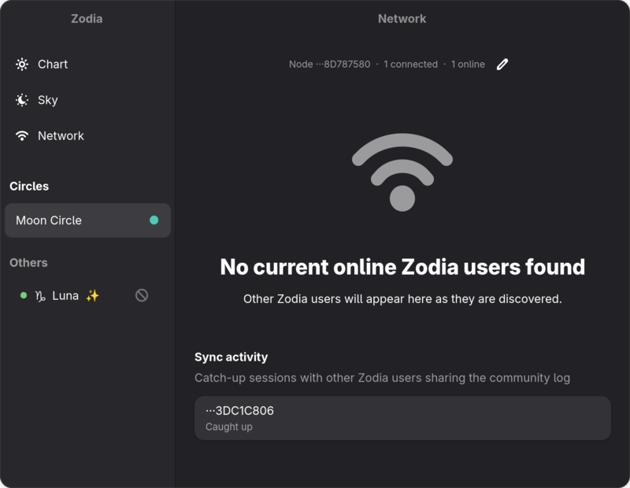
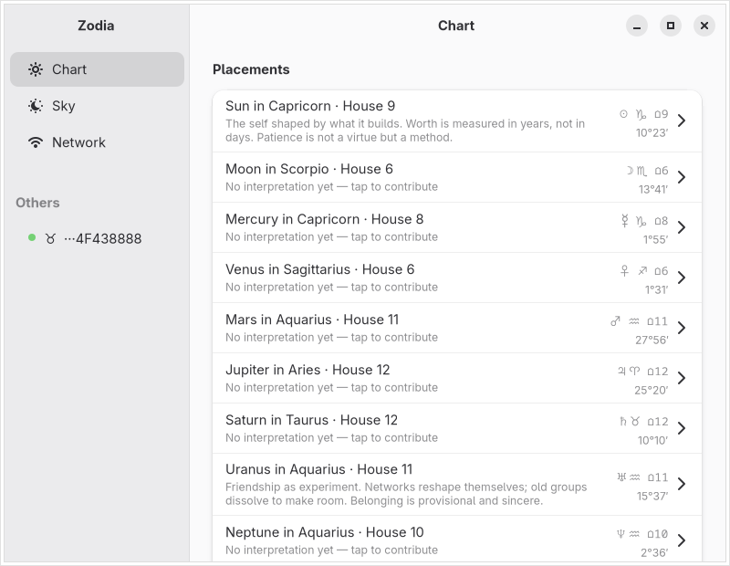
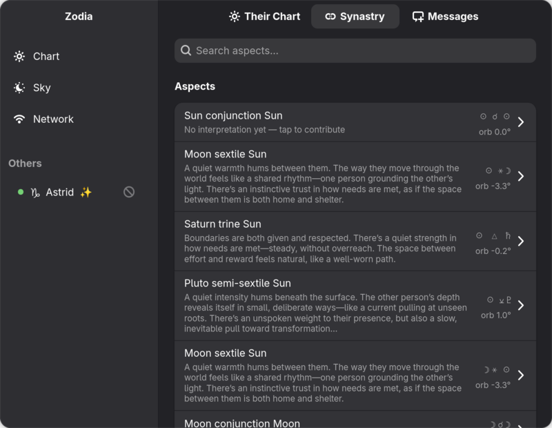
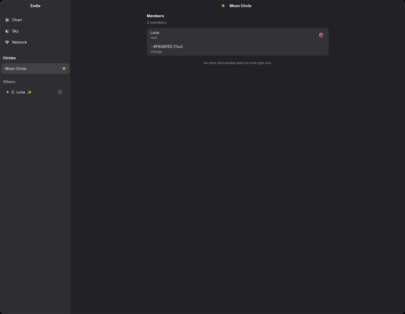

Natal charts, transits, and crowd-sourced aspect interpretations with your peers




Full natal chart with planetary placements, house cusps, and aspects. Live transit tracking shows what is active right now. A curated baseline interpretation set is bundled and always available offline.
Nearby users appear automatically over mDNS. A global relay connects you to users anywhere on the internet. Charts are compared the moment two people connect — no accounts, no sign-up.
Talk directly with connected peers over encrypted QUIC. No central server relays the audio. Your birth data and conversation history never leave your device.
Aspect readings are edited collaboratively rather than competing for the best take. Hearts, replies, and live transits show up in an activity feed as they happen, with edit history and a veto window so nobody's contribution just disappears.
Share a reading with specific people instead of the whole network. Invite friends straight from your connected peers, with read-only or posting access — only invited members can decrypt what you share there.